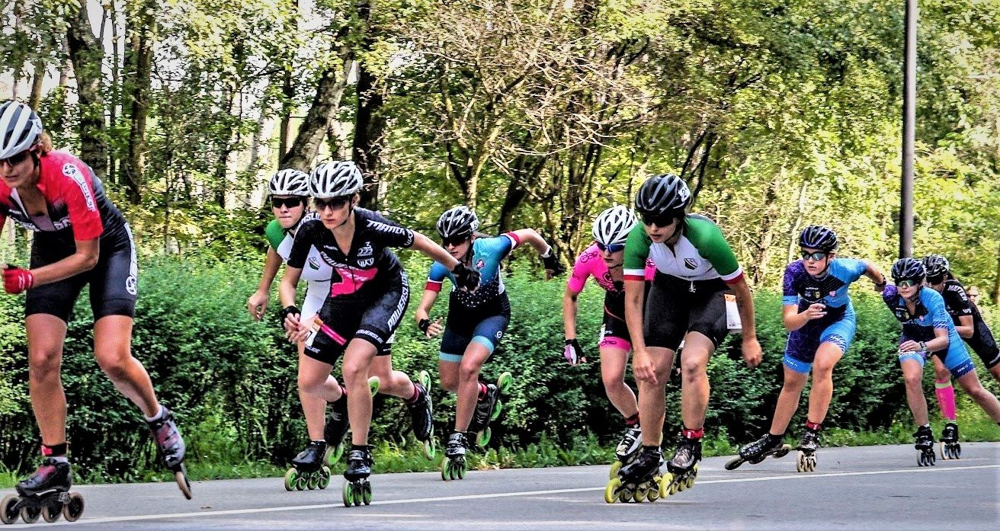

Speed
Speed

Puchar Polski
Zawody rozgrywane najczęście na długich dystansach. W tej kategorii zawodów zawodnicy biorą udział
w rankingu punktowym to znaczy ze na Puchar Polski składa się kilka zawodów za które zawodnicy otrzymują punkty.
W myśl uczestnik o największej sumie otrzymanych punktów zostaje zwyciązcą Pucharu Polski na dany rok.
Puchar Świata